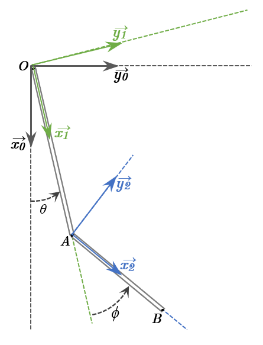

Données du problème :
Figure 2 : Schéma du pendule double.
\( \vec{\Omega}_{R_1/R_0} = \dot{\theta} \vec{z}_0 = \dot{\theta} \vec{z}_1 = \dot{\theta} \vec{z}_2 \)
Soit \( \matrice{0 \\ 0 \\ \dot{\theta}}_{B_1} \) ou \( \matrice{0 \\ 0 \\ \dot{\theta}}_{B_2} \).
\( \vec{\Omega}_{R_2/R_0} = \dot{\theta} \vec{z}_1 + \dot{\phi} \vec{z}_1 = (\dot{\theta} + \dot{\phi}) \vec{z}_1 \)
Soit \( \matrice{0 \\ 0 \\ \dot{\theta} + \dot{\phi}}_{B_1} \) ou \( \matrice{0 \\ 0 \\ \dot{\theta} + \dot{\phi}}_{B_2} \) (car \( \vec{z}_1 = \vec{z}_2 = \vec{z}_0 \)).
Relations de passage entre \(B_1\) et \(B_2\) (rotation d'angle \( \phi \) autour de \( \vec{z}_1 = \vec{z}_2 \)) :
\( \vec{V}_{A/R_0} = L_1 \dot{\theta} \vec{y}_1 = \matrice{0 \\ L_1 \dot{\theta} \\ 0}_{B_1} \)
\( \vec{V}_{A/R_0} = L_1 \dot{\theta} (\sin\phi \vec{x}_2 + \cos\phi \vec{y}_2) = \matrice{L_1 \dot{\theta} \sin\phi \\ L_1 \dot{\theta} \cos\phi \\ 0}_{B_2} \)
\( \vec{V}_{B/R_0} = (L_1 \dot{\theta} \sin\phi \vec{x}_2 + L_1 \dot{\theta} \cos\phi \vec{y}_2) + ((\dot{\theta} + \dot{\phi}) \vec{z}_2) \wedge (L_2 \vec{x}_2) \)
\( \vec{V}_{B/R_0} = (L_1 \dot{\theta} \sin\phi) \vec{x}_2 + (L_1 \dot{\theta} \cos\phi + L_2 (\dot{\theta} + \dot{\phi})) \vec{y}_2 = \matrice{L_1 \dot{\theta} \sin\phi \\ L_1 \dot{\theta} \cos\phi + L_2 (\dot{\theta} + \dot{\phi}) \\ 0}_{B_2} \)
\( \vec{V}_{B/R_0} = (L_1 \dot{\theta} \sin\phi) (\cos\phi \vec{x}_1 + \sin\phi \vec{y}_1) + (L_1 \dot{\theta} \cos\phi + L_2 (\dot{\theta} + \dot{\phi})) (-\sin\phi \vec{x}_1 + \cos\phi \vec{y}_1) \)
Composante en \( \vec{x}_1 \): \( L_1 \dot{\theta} \sin\phi \cos\phi - (L_1 \dot{\theta} \cos\phi + L_2 (\dot{\theta} + \dot{\phi})) \sin\phi = -L_2 (\dot{\theta} + \dot{\phi}) \sin\phi \).\( \vec{V}_{B/R_0} = -L_2 (\dot{\theta} + \dot{\phi}) \sin\phi \vec{x}_1 + (L_1 \dot{\theta} + L_2 (\dot{\theta} + \dot{\phi}) \cos\phi) \vec{y}_1 = \matrice{-L_2 (\dot{\theta} + \dot{\phi}) \sin\phi \\ L_1 \dot{\theta} + L_2 (\dot{\theta} + \dot{\phi}) \cos\phi \\ 0}_{B_1} \)
\( \vec{a}_{A/R_0} = \frac{d}{dt} (L_1 \dot{\theta} \vec{y}_1) \bigg|_{R_0} = \left( \frac{d(L_1 \dot{\theta})}{dt} \right) \vec{y}_1 + (L_1 \dot{\theta}) \frac{d\vec{y}_1}{dt}\bigg|_{R_0} \)
\( \vec{a}_{A/R_0} = (L_1 \ddot{\theta}) \vec{y}_1 + (L_1 \dot{\theta}) (-\dot{\theta} \vec{x}_1) = -L_1 \dot{\theta}^2 \vec{x}_1 + L_1 \ddot{\theta} \vec{y}_1 = \matrice{-L_1 \dot{\theta}^2 \\ L_1 \ddot{\theta} \\ 0}_{B_1} \)
\( \vec{a}_{A/R_0} = -L_1 \dot{\theta}^2 (\cos\phi \vec{x}_2 - \sin\phi \vec{y}_2) + L_1 \ddot{\theta} (\sin\phi \vec{x}_2 + \cos\phi \vec{y}_2) \)
\( \vec{a}_{A/R_0} = (-L_1 \dot{\theta}^2 \cos\phi + L_1 \ddot{\theta} \sin\phi) \vec{x}_2 + (L_1 \dot{\theta}^2 \sin\phi + L_1 \ddot{\theta} \cos\phi) \vec{y}_2 = \matrice{-L_1 \dot{\theta}^2 \cos\phi + L_1 \ddot{\theta} \sin\phi \\ L_1 \dot{\theta}^2 \sin\phi + L_1 \ddot{\theta} \cos\phi \\ 0}_{B_2} \)